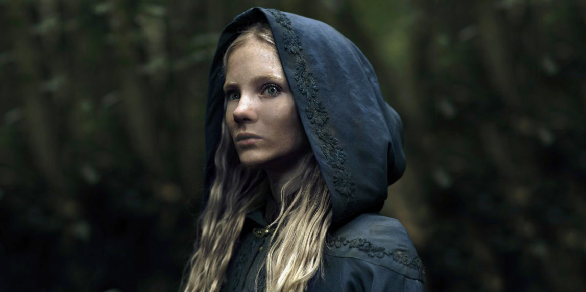
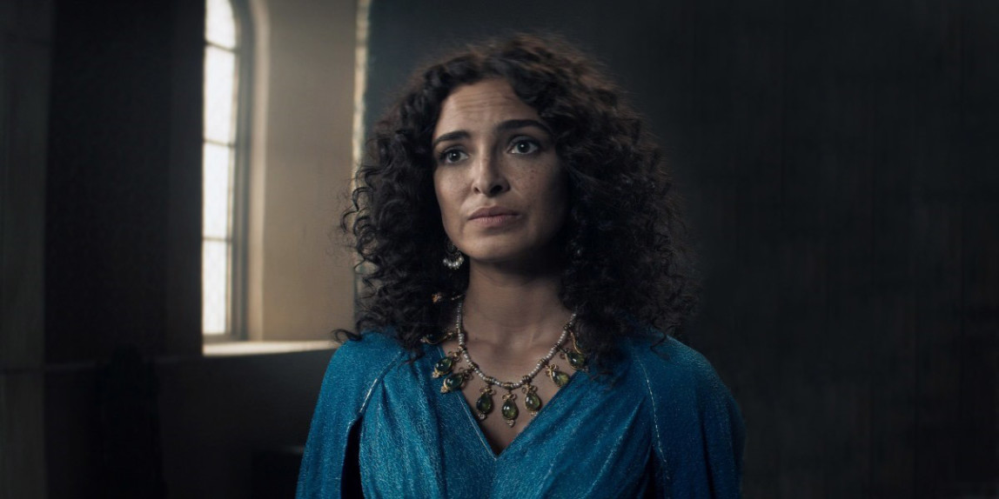
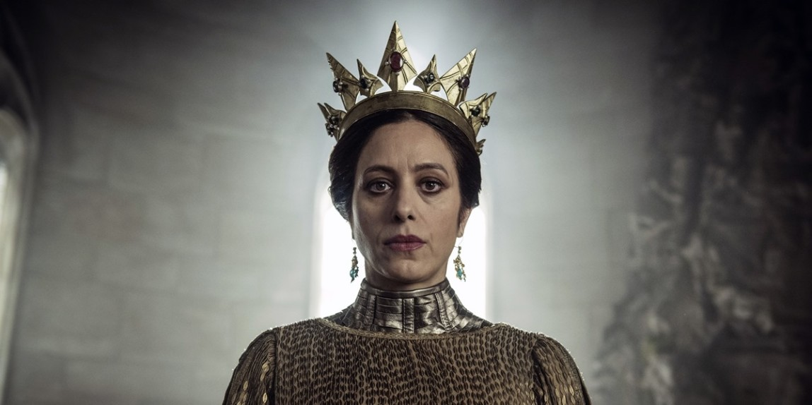
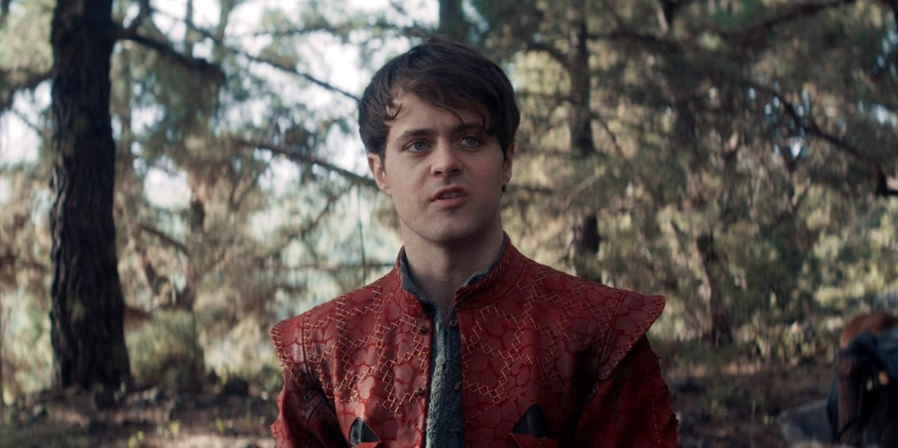
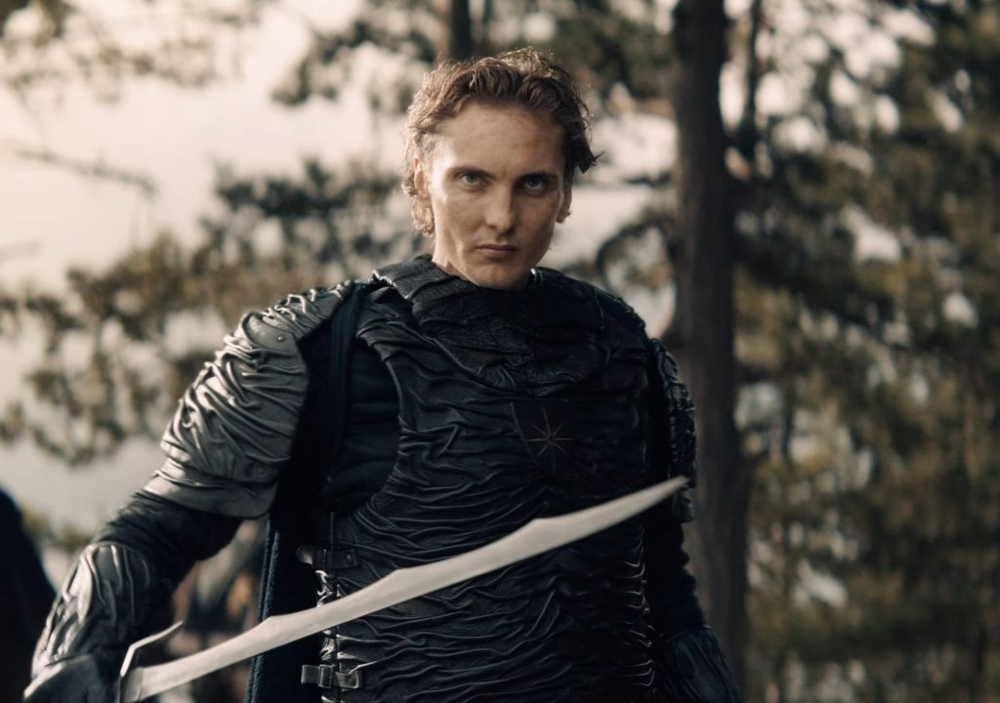
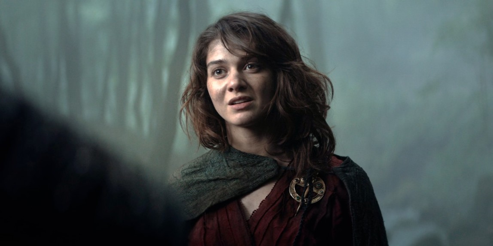

Геральт из Ривии
Ведьмак, также известный как Белый Волк, или Мясник из Блавикена. Когда Геральт был ребенком, его мать Висенна отдала его в Каэр Морхен — пристанище ведьмаков, где он проходил обучение, чтобы впоследствии стать охотником на монстров.
Йенифер из Венгерберга
Чародейка, родившаяся в городе Венгерберг, столице королевства Аэдирн. Мать ее была человеком, а отец — полуэльфом.

Цири
Ребенок-неожиданность и наследница престола Цинтры. В литературных источниках упоминается как принцесса Цирилла, Цири, Львенок из Цинтры.

Трисс
Чародейка, которая на несколько лет моложе Йеннифер. Обучалась в академии Аретузы, после чего служила при дворе у короля Фольтеста.

Калантэ
Ее величество Львица из Цинтры, мать Паветты и бабушка Цири. Калантэ взошла на престол в возрасте 14 лет, после смерти ее отца, короля Дагорада.

Лютик
Бард, который сопровождал Геральта во многих его путешествиях, создавая и исполняя классические песни Континента.

Кагыр
Молодой нильфгаардский рыцарь. Благородный лорд, отважный, доблестный, искренний. Он оказался в сложной ситуации, но при этом сохраняет свое лицо. Кагыр — рыцарь во всех смыслах и старается поступать так, как того требует его совесть.
Фрингилья
Чародейка, ответственная за некоторые из самых темных страниц в истории Континента.

Ренфри
Свергнутая княжна Крейдена, ставшая бесстрашным лидером шайки разбойников. Упоминается Стрегобором, как «последняя из женщин Лилиты».